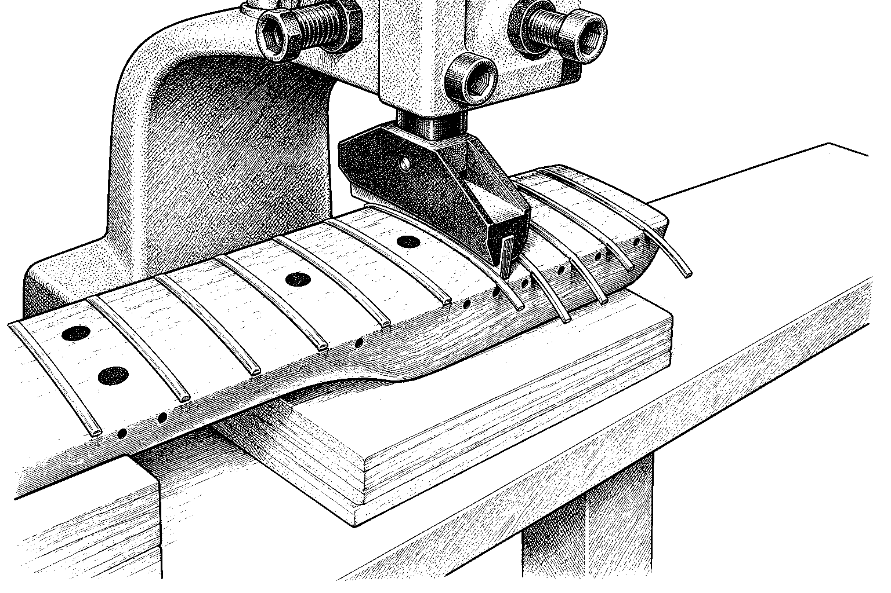
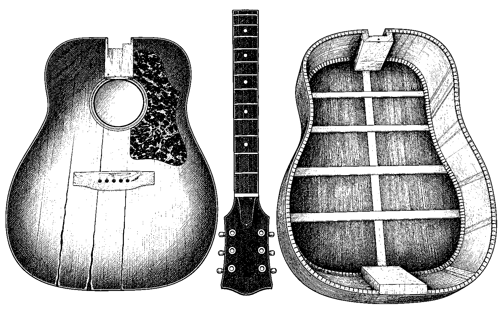
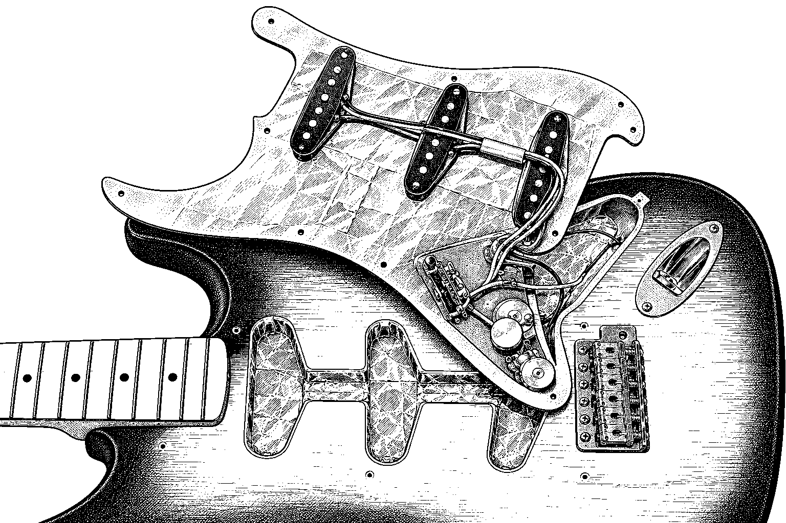
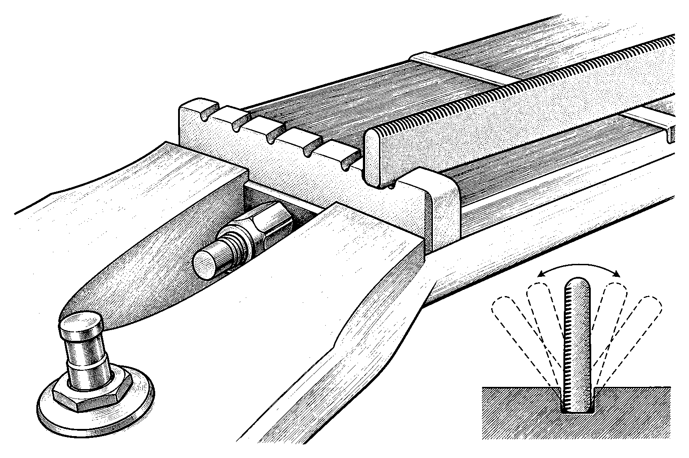
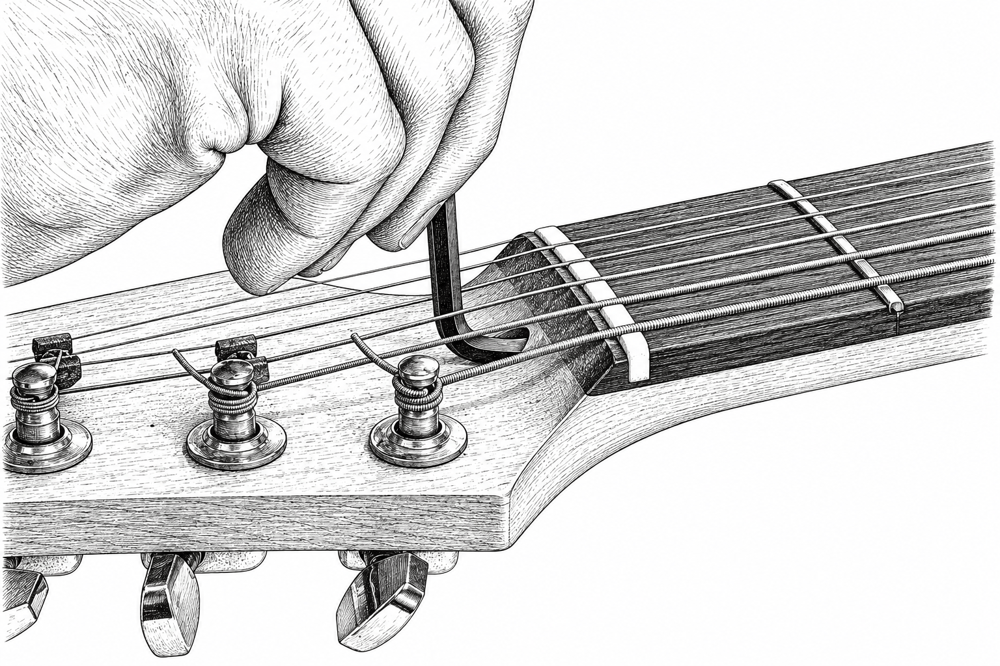
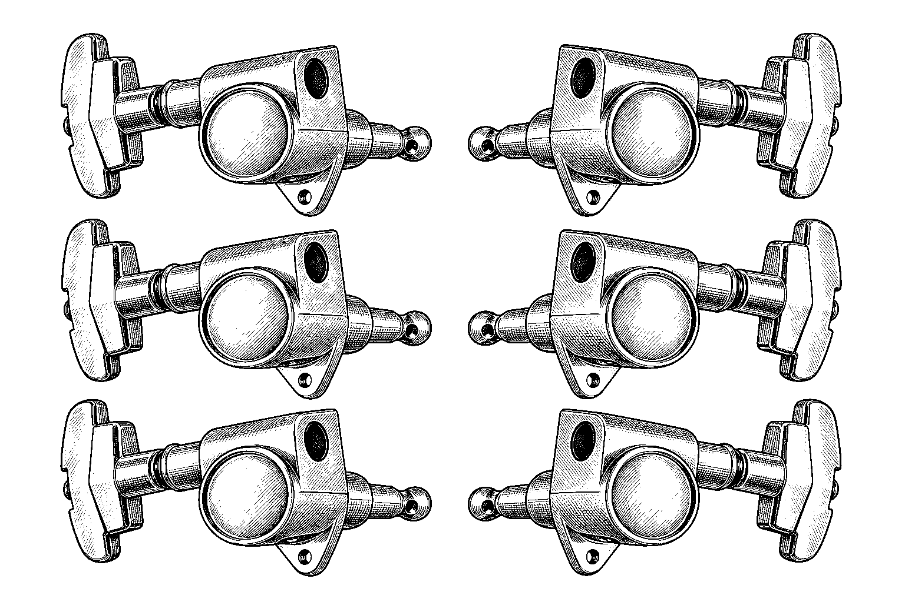
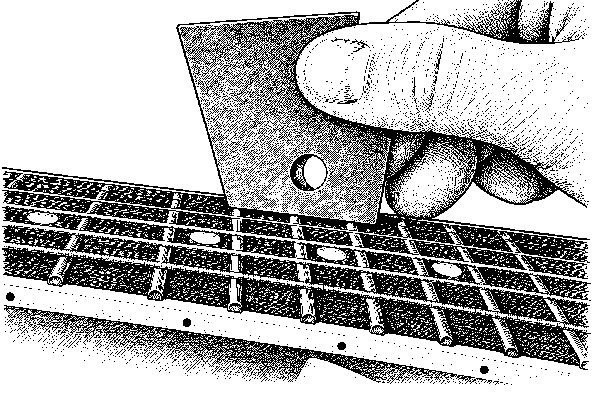
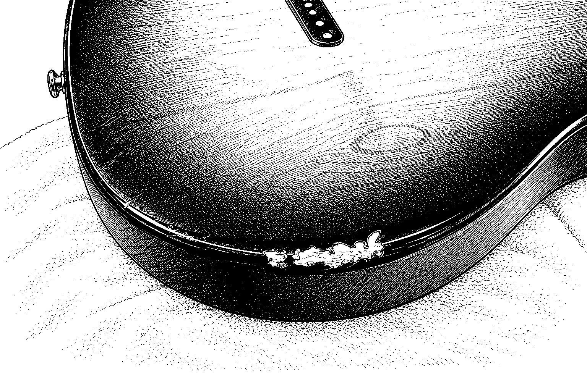

Something sounding, feeling or looking off? Here's what each repair involves and what tells you it's time. Pick one from the list, or scroll on down.
Hey! Got an upright bass?
We ain't scared of those either. Bring 'em on!
- Neck resets & refrets
- Crack & brace repair
- Electronics & shielding
- Nut & saddle work
- Pro setups & intonation
- Hardware upgrades
- Fret level & crown
- Finish touch-ups
Neck resets & refrets

Over the years string pull and shifting wood can tilt an acoustic's neck back, so the strings float higher and higher above the frets. A neck reset loosens the joint with heat and steam, lifts the neck out, trims the heel to change its angle, and glues it back so the action drops where it belongs. A refret swaps worn-out frets for fresh wire, and the two jobs often go hand in hand because heating the neck can loosen frets.
Signs it's time
- Strings sit high and the guitar feels stiff to play
- The guitar sounds quieter than it should
- Frets are worn down, grooved, or buzzing
Crack & brace repair

Wood moves with the weather, and in dry winter air tops, backs and sides can split or the braces inside can let go of the wood. Hairline cracks can be closed and glued so they stay shut, while wider gaps get a sliver of matching wood let in. Loose braces are cleaned and reglued so the top stops buzzing and keeps its shape.
Signs it's time
- A visible split in the top, back, or side
- A buzz or rattle from inside the body that is not a fret
- The top looks bellied or lifted near the bridge or pickguard
Electronics & shielding

Most electric guitar noise and dropouts come from dirty controls, loose or cold solder joints, or a circuit with nothing to block outside interference. A tech tests the circuit with a meter, cleans or replaces scratchy pots and switches, and re-solders what has failed. Shielding the control cavities and pickguard with conductive foil or paint gives a quieter signal with less hum.
Signs it's time
- Scratchy or crackling sound when you turn the knobs
- Hum or buzz that goes away when you touch the strings or metal
- A dead or cutting-out pickup or switch position
Nut & saddle work

The nut and the saddle are the two ends of the vibrating string, and how they are cut sets your action and a lot of your tone. Slots cut too low cause buzzing on open strings, worn plastic can sound dull, and a saddle that fits badly wastes volume. A new nut or saddle is shaped and slotted to fit your guitar and your strings.
Signs it's time
- Open strings buzz or sound choked near the headstock
- Strings feel too high at the first frets
- The acoustic sounds dull or weak, or the saddle leans or looks worn
Pro setups & intonation

A setup tunes up how the guitar feels and plays: neck relief, string height, nut slots and pickup height are all checked and set to suit you. Intonation sets each string's length at the bridge so a note fretted at the 12th fret matches the open string an octave up. The result is a guitar that plays easily and stays in tune up the neck.
Signs it's time
- Notes sound out of tune up the neck even when open strings are in tune
- Strings feel too high, or buzz when you play
- You switched string gauge or tuning and it no longer feels right
Hardware upgrades

Worn parts cause plenty of tuning and playing trouble that people blame on the whole guitar. Better tuning machines, bridges, and other hardware can cut slop in the gears, hold pitch through bends, and make the guitar more dependable. Parts are chosen to suit the guitar, and fitting may call for careful drilling or plugging old holes.
Signs it's time
- The guitar will not hold pitch, or the tuners feel loose and slip
- Tuner buttons or other plastic parts are cracked or crumbling
- You want smoother tuning or a sturdier bridge or tailpiece
Fret level & crown

Frets wear into little dips and flat spots, and a few high ones make strings buzz or die out. Leveling files the fret tops to one even plane, then crowning rounds them again so each note starts cleanly. Fret ends are smoothed and the frets polished, which often brings a tired neck back to life without a full refret.
Signs it's time
- Strings buzz at some frets but not others
- Notes cut out or sound choked when you bend
- You can see or feel grooves worn into the frets
Finish touch-ups

Dings, chips and scratches happen to every guitar that gets played. A touch-up fills the damage with clear finish a drop at a time, then levels and polishes it so it blends in and the wood is protected. How it is done depends on the finish type, and some marks are best left as part of the guitar's story.
Signs it's time
- A chip on the headstock or body edge showing bare wood
- A dent or scratch that catches the light
- Wear spots where the finish has worn through